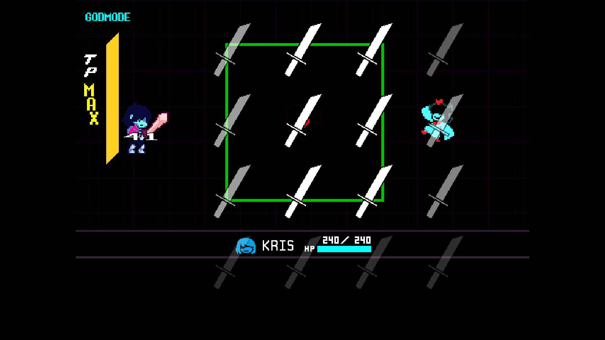
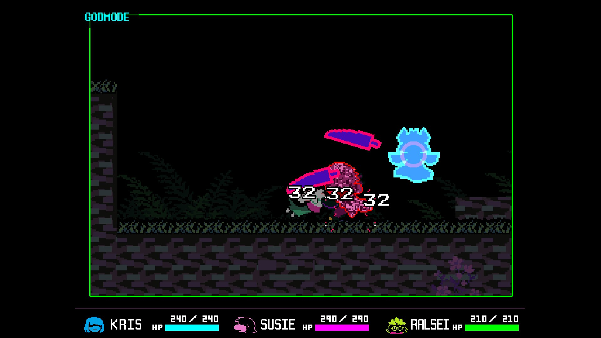

F9Runtime God Mode
Turn protection on or off immediately without closing the game or reinstalling the mod.
SFT DELTARUNE God Mode v2 keeps party HP protected while giving you full control over when protection is active. God Mode, grazing, the on-screen overlay, hit effects, colors, and timeout behavior can all be changed while the game is running.
Version 1 permanently replaced several damage functions. Version 2 preserves the original chapter damage code and only bypasses it while God Mode is enabled. This makes the F9 OFF state return the game to normal damage behavior instead of leaving permanent protection active.
The mod starts enabled by default, but every major behavior can be changed during play.
Turn protection on or off immediately without closing the game or reinstalling the mod.
Use F10 or the config menu to allow normal grazing and TP gain, or block grazing completely.
Show a small GODMODE indicator while protection is active, or disable the indicator entirely.
Choose Yellow, White, Lime, Aqua, Orange, Red, or Purple directly from the config menu.
Keep the overlay visible at all times or hide it after 1, 2, 3, 5, or 10 seconds.
Choose whether normal hit flashes and damage feedback are allowed while HP is restored.
Change every important option from a DELTARUNE-style menu without relying on direct hotkeys.
Your selected options persist in SFT_GODMODE_CONFIG.ini between launches.
The installer detects the opened chapter and applies shared protection plus relevant chapter-specific patches.
Press F8 at almost any time to open the menu. Direct F9 and F10 shortcuts can also be disabled from inside it.

The menu displays the current value for every setting and saves changes immediately.
God Mode: ON
Grazing: ALLOWED
Take Damage Effects: OFF
F9 / F10 Hotkeys: ON
Overlay: ON
Color: Yellow
Timeout: Always visible while God Mode is active
The game creates SFT_GODMODE_CONFIG.ini. Deleting that file makes the mod recreate it with default settings.
Shared damage scripts are protected, along with special modes that use their own HP or life systems.
Protects the regular party HP systems and blocks same-frame death or game-over processing while enabled.
Handles the Chapter 2 boxing health system and its direct collision-based damage path.
Includes protection for the small Susie and Ralsei health systems used in special Chapter 2 sequences.
Protects the board-mode player health path while allowing destroy-on-hit bullets to clean themselves up.
Restores special health or life values used by Chapter 3 and Chapter 4 minigame systems when detected.
Supports the platform-mode player HP and invincibility variables when that controller exists.
Install the script separately into each chapter you want to use it with.
DR_GODEMODE_v2.csx.The installer also stops if it finds an existing obj_sft_godmode_controller, which helps prevent accidental double installation.
Click any screenshot for a full-size preview.
Configuration MenuAll runtime settings
Battle TestProtected HP and overlay
Party Battle TestFull party protection